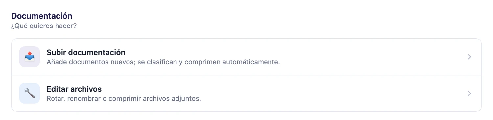
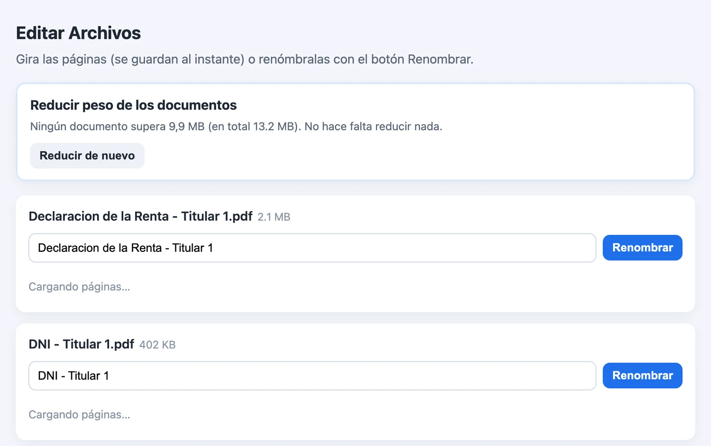
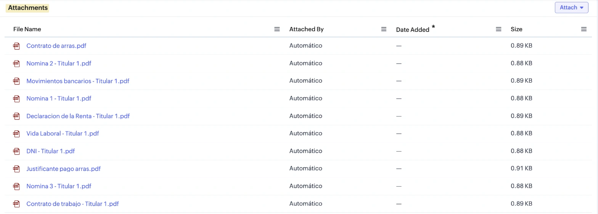
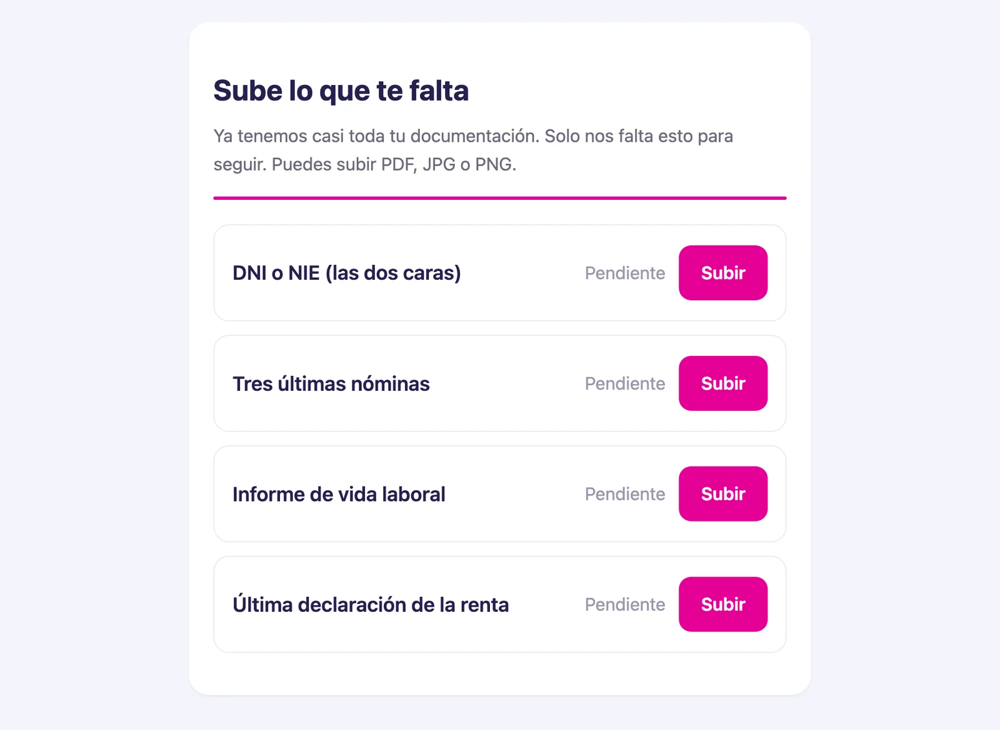
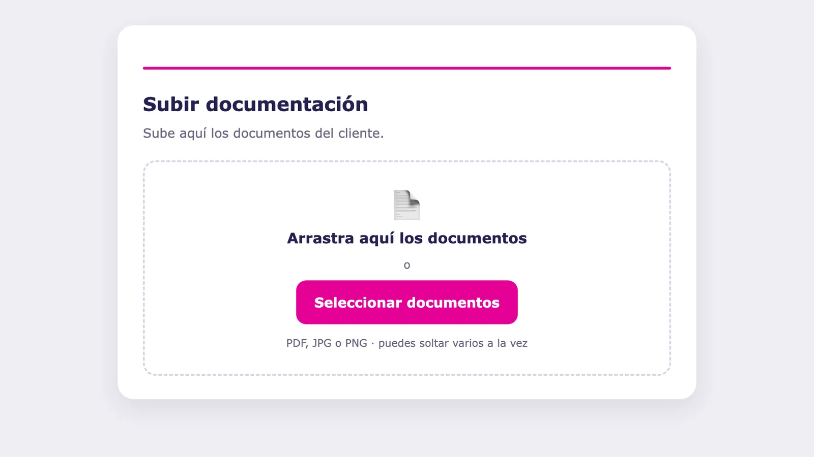

Projecte 8 · Gestió de documents amb IATots els projectes
Els clients envien els seus papers com poden. El despatx els rep ordenats, amb el seu nom, i el que falta es reclama sol.
Serveix per a qualsevol negoci que rep molta documentació, com una gestoria o una assessoria. El client envia fotos i arxius sense ordenar. La IA reconeix què és cadascun (un DNI, una nòmina, una declaració de la renda), el redreça, li posa nom i el desa a la fitxa d'aquest client. Després compara el que ha rebut amb les dades d'aquest client al CRM i sap quins documents li falten segons el seu cas. A més, redueix el pes dels arxius perquè es puguin enviar per correu sense passar del límit.
El que envia el client
El que havia d'arribar
Correu al client amb un enllaç per pujar només el que falta.
Tot rebut. La tasca de l'equip s'actualitza sola.
L'eina real










Abans i ara
| Tasca | Abans | Ara |
|---|---|---|
| Ordenar | Una persona obria cada arxiu, mirava què era, el reanomenava i el desava. | Cada document arriba amb el seu nom i a la carpeta del seu client. |
| Saber què falta | Es comprovava a mà, client per client. | Es revisa sol, dues vegades al dia, creuant el que s'ha rebut amb les dades de cada client al CRM. |
| Demanar el que falta | Calia escriure o trucar al client, i tornar a insistir. | El client rep un correu amb la llista i un enllaç per pujar només això. |
Què vaig fer jo
- Vaig dissenyar el recorregut complet d'un document, des que el client l'envia fins que queda a la seva fitxa.
- Vaig decidir quins tipus de document es reconeixen i com s'anomenen i s'agrupen.
- El vaig provar amb vuit casos complets de clients de prova abans de posar-lo en marxa.
- Vaig vetllar perquè les dades personals no quedin apuntades als registres interns del sistema.
Fet ambCloudflare Workers · Claude · Zoho CRM · Zoho WorkDrive · Zoho Forms